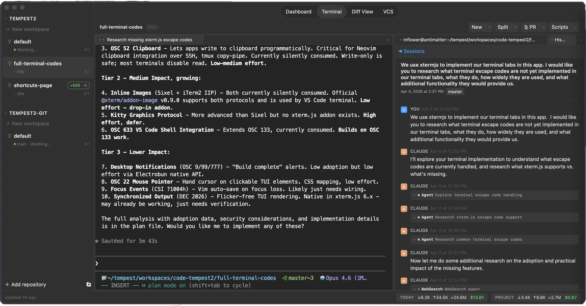

Tempest is a native macOS developer tool with an integrated terminal, browser, editor, and git workflows — all in a single, fast app.

Features
Stop switching between apps. Tempest brings your terminal, browser, editor, and git tools together in a single native workspace.
xterm.js with WebGL rendering and a real PTY backend via Bun.Terminal. Fast, native-feeling, with full color and Unicode support.
Tabbed browsing powered by the system WKWebView. Browse docs, preview your work, and manage bookmarks without leaving the workspace.
Monaco editor with Vim bindings. Syntax highlighting, code intelligence, and the editing experience you already know.
Live-rendered markdown with Mermaid diagram support. Great for docs, READMEs, Claude Plans, and design notes.
Built-in diff viewer, VCS status, and file staging for both Git and Jujutsu. See what changed and commit without switching to a separate tool.
Track and review pull requests directly in your workspace. Stay on top of reviews without context-switching to the browser.
Workspace persistence, session state restore, and terminal scrollback capture. Close and reopen exactly where you left off.
Create, archive, and switch between workspaces, each with their own terminals, browser tabs, and sessions. Activity indicators show whether each workspace is idle, working, or waiting for input.
Highlight text in VCS View and send it to Claude Code with context automatically included. Spec-driven development made interactive.
Define parameterized scripts and run them with a button click. Automate repetitive tasks without leaving the workspace.
Quick access to commands and files with Cmd+Shift+P and Cmd+P. Open results in the current pane or use arrow keys to target left or right.
Under the hood
Two-process architecture: a Bun backend for performance-critical work and a React webview for the UI, communicating via typed RPC.
Electrobun
Native macOS framework
Bun
Fast JavaScript runtime
React 19
UI framework
Tailwind CSS 4
Utility-first styling
xterm.js
Terminal emulation
Zustand
State management
Monaco
Code editor
WKWebView
Native browser engine
Follow the project on GitHub or star the repo to stay updated.
View on GitHub